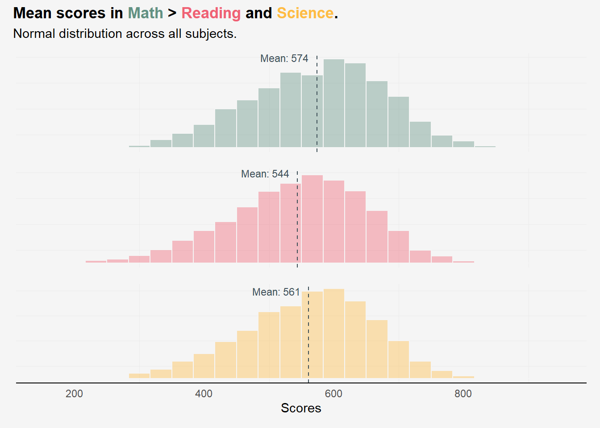
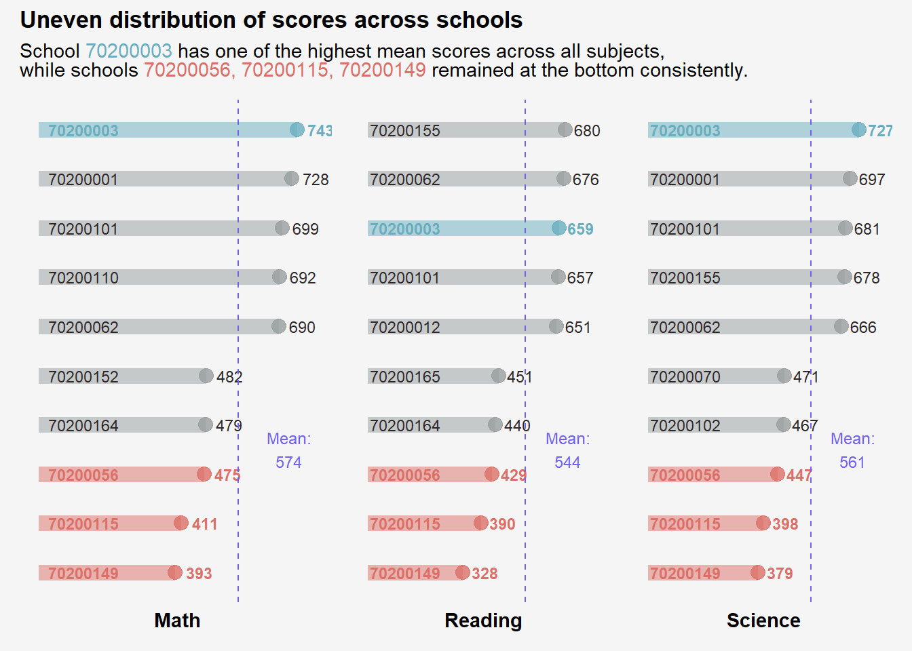
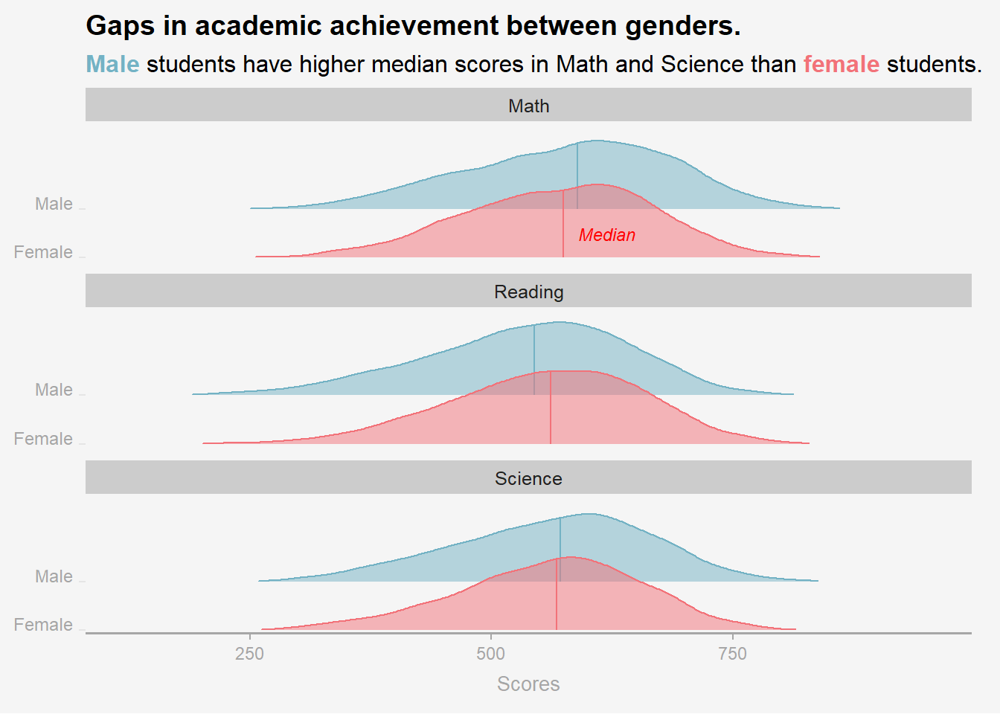
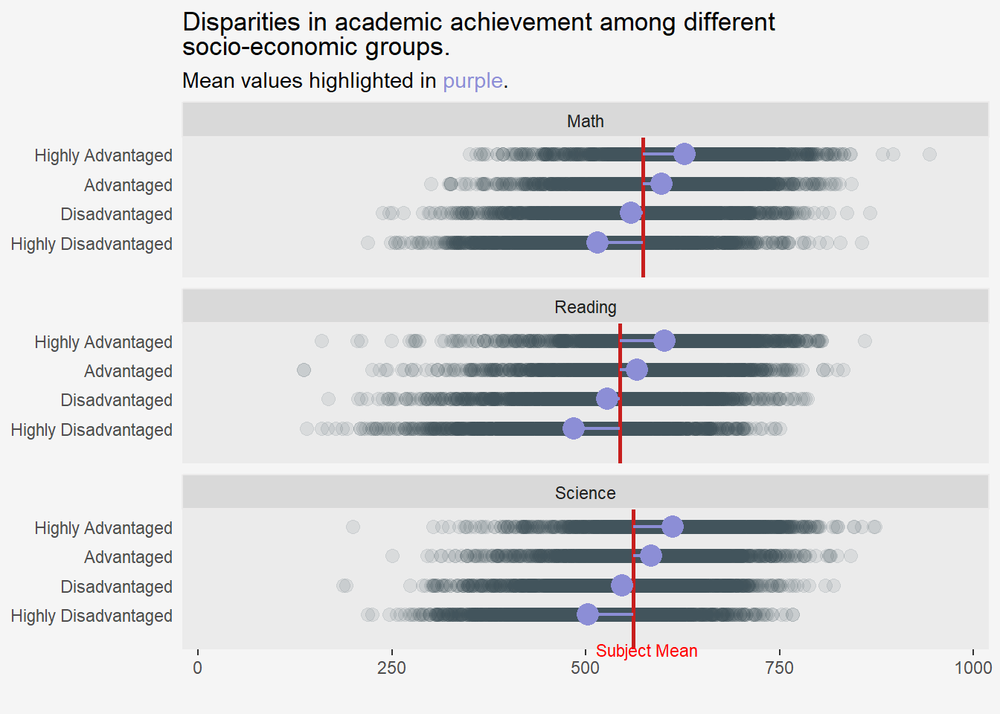
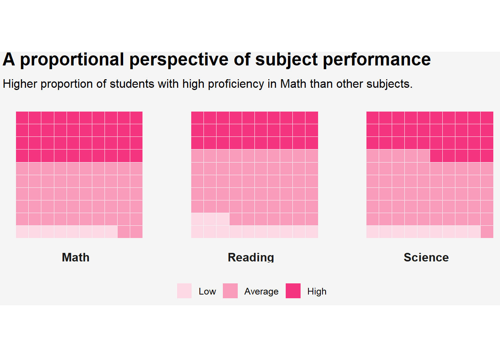
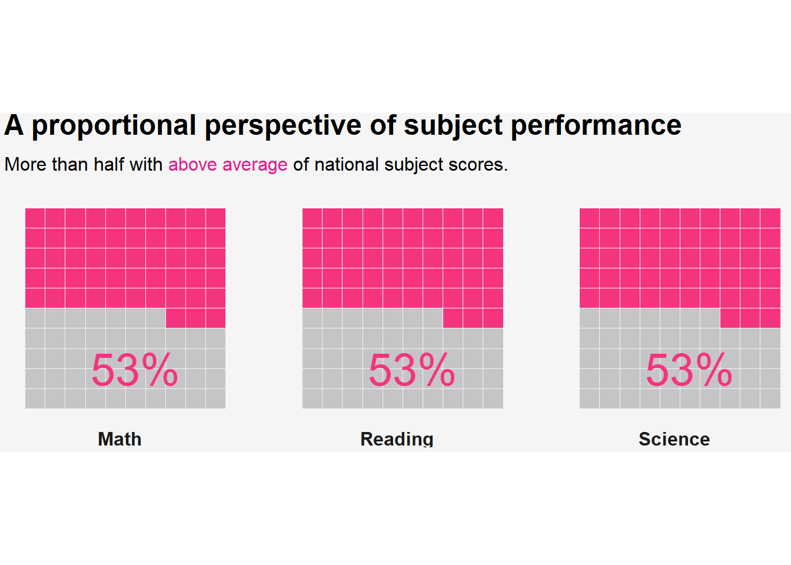

pacman::p_load(tidyverse, haven, patchwork,
scales, ggridges, ggdist,
ggtext, ggpubr, intsvy,
waffle, hrbrthemes)Take-home Exercise 2a - DataVis Makeover of Take home ex 1a
1. Overview
In the previous Take-home Exercise, we utilised Exploratory Data Analysis methods and ggplot functions to uncover the distribution of performance among Singaporean students in mathematics, reading, and science. We also explored the relationships between these performance metrics and factors such as schools, gender, and socioeconomic status, leveraging data from the PISA Student Questionnaire Survey.
In this exercise, the objective is to enhance the original visualisations I have created in the previous exercise.
Here, I will reference my classmate’s work from my Visual Analytics class, term Jan 2024. All credit belongs to her for the exceptional effort, creativity and expertise displayed in the Data Viz makeover exercise.
The intention of this post is not to copy a better piece of work, but rather to learn from it, and understand the best practices and thought processes employed by someone who has inspired me.
2. Getting Started
2.1 Loading packages
The following code chunk uses p_load() of pacman package to check if tidyverse packages are installed in the computer. If they are, the libraries will be called into R.
2.2 PISA Data - Importing data set
The data prep steps can be referenced from my previous exercise 1a. Here I will just load in the prepared sub set of the original data set.
stu_SG <- read_rds("data/stu_SG.rds")2.3 Data Wrangling
pisa.mean.pv() function of the instvy package is used to obtain the mean plausible values out of the 10 plausible values provided in the data set.
Math_mean_SG <- pisa.mean.pv(pvlabel = paste0("PV",1:10,"MATH"), by="CNT", data=stu_SG)
Read_mean_SG <- pisa.mean.pv(pvlabel = paste0("PV",1:10,"READ"), by="CNT", data=stu_SG)
SCIE_mean_SG <- pisa.mean.pv(pvlabel = paste0("PV",1:10,"SCIE"), by="CNT", data=stu_SG)Math_mean_SG CNT Freq Mean s.e. SD s.e
1 SGP 6606 574.66 1.23 102.8 0.91Read_mean_SG CNT Freq Mean s.e. SD s.e
1 SGP 6606 542.55 1.87 105.89 1.15SCIE_mean_SG CNT Freq Mean s.e. SD s.e
1 SGP 6606 561.43 1.33 99.09 1.1The function generates descriptive statistics for each subject, including the mean, frequency, standard error, and standard deviation.
3. DataVis Makeover
3.1 Distribution of Subject scores
The code chunk below is first used to calculate the mean PV of each subject using PV1.
# Calculate mean values for 3 subjects
mean_m <- round(mean(stu_SG$PV1MATH),0)
mean_r <- round(mean(stu_SG$PV1READ),0)
mean_s <- round(mean(stu_SG$PV1SCIE),0)The remake features similar histograms with trio of colours to represent each of the subject.
Using
element_markdown()of the ggtext package withintheme()enables colour-coding of the graph title. This is used in conjunction withspan style='color:'to specify the colour hexcode of choice.limits()is explicitly declared insidescale_x_continuous()to ensure the range of x-axis used is consistent throughout.
Show the code
# Histogram for Math scores
hist_m <-
ggplot(
stu_SG,
aes(x = PV1MATH)
) +
geom_histogram(
bins = 25,
color = "#f5f5f5",
fill="#629182",
alpha=0.4,
) +
# Sets same breaks on the x-axis
scale_x_continuous(
breaks = scales::pretty_breaks(n = 5),
# Set same limits for both plots for consistency
limits = c(150,950),
) +
# Insert mean line
geom_vline(
aes(xintercept = mean_m),
colour="#3E5058",
linewidth = 0.5,
linetype = "dashed"
) +
# Include annotation for mean line
annotate(
geom = "text",
x = mean_m-50,
y = 870,
label = paste0("Mean: ", mean_m),
color="#3E5058",
size = 3,
) +
labs(x = NULL, y = NULL
) +
theme_minimal() +
theme(
axis.text.y = element_blank(),
axis.text.x = element_blank(),
panel.grid.major = element_blank(),
plot.background = element_rect(fill="#f5f5f5",colour="#f5f5f5")
)
# Histogram for Reading scores
hist_r <-
ggplot(
stu_SG,
aes(x = PV1READ)
) +
geom_histogram(
bins = 25,
color = "#f5f5f5",
fill="#EF6174",
alpha=0.4,
) +
scale_x_continuous(
# Sets same breaks on the x-axis
breaks = scales::pretty_breaks(n = 5),
# Set same limits for both plots for consistency
limits = c(150,950),
) +
# Insert mean line
geom_vline(
aes(xintercept = mean_r),
colour="#3E5058",
linewidth = 0.5,
linetype = "dashed"
) +
# Include annotation for mean line
annotate(
geom = "text",
x = mean_r-50,
y = 870,
label = paste0("Mean: ", mean_r),
color="#3E5058",
size = 3,
) +
labs(x = NULL, y = NULL
) +
theme_minimal() +
theme(
axis.text.y = element_blank(),
axis.text.x = element_blank(),
panel.grid.major = element_blank(),
plot.background = element_rect(fill="#f5f5f5",colour="#f5f5f5")
)
hist_s <-
ggplot(
stu_SG,
aes(x = PV1SCIE)
) +
geom_histogram(
bins = 25,
color = "#f5f5f5",
fill="#FEBc44",
alpha= 0.4,
) +
scale_x_continuous(
# Sets same breaks on the x-axis
breaks = scales::pretty_breaks(n = 5),
# Set same limits for both plots for consistency
limits = c(150,950),
) +
# Insert mean line
geom_vline(
aes(xintercept = mean_s),
colour="#3E5058",
linewidth = 0.5,
linetype = "dashed"
) +
# Include annotation for mean line
annotate(
geom = "text",
x = mean_s-50,
y = 870,
label = paste0("Mean: ", mean_s),
color="#3E5058",
size = 3,
) +
labs(x = "Scores", y = NULL
) +
theme_minimal() +
theme(
axis.text.y = element_blank(),
axis.line.x = element_line(),
panel.grid.major = element_blank(),
plot.background = element_rect(fill="#f5f5f5",colour="#f5f5f5")
)
p1 <- (hist_m / hist_r)
p1 / hist_s +
plot_layout(heights = c(1,1,1)) +
plot_annotation(title="Mean scores in <span style='color: #629182;'>Math</span> > <span style='color: #EF6174;'>Reading</span> and <span style='color: #FEBc44;'>Science</span>.",
subtitle = "Normal distribution across all subjects.",
theme=theme(plot.title = element_markdown(hjust = 0, face="bold"),
plot.background = element_rect(fill="#f5f5f5", colour = "#f5f5f5"),
panel.border = element_blank()))
The following objectives were achieved from the revamp:-
Clarity
Graph title: The title describes accurately the primary observation derived from the graph. The use of colour-coded words for each subject eliminates the need for a legend.
x-axis tick marks and scale: The histograms are consolidated into a single column with a share x-axis. It features aligned bin numbers across each subject to improve clarity and comparability.
Mean Line: The mean is calculated using PV1 values for each subject to ensure a more precise benchmarking process that contributes to the graph’s accuracy.
Aesthetic
- Annotation placement: The move of the mean line’s annotation to the top enhances the overall view of the plot and avoids obstruction.
3.2 Relationship between Scores and School ID
This remake was inspired by Tobias Stalder’s submission for TidyTuesday.
Firstly, as.character() is used to convert the SchID variable from numeric to categorical data type.
# Convert School ID to character data type
stu_SG <- stu_SG %>%
mutate(CNTSCHID = as.character(CNTSCHID))Using n_distinct we can identify that there are 164 unique school IDs in our data set.
n_distinct(stu_SG$CNTSCHID)[1] 164Instead of showing all 164 schools, visualising the top 5 and bottom 5 results by subject performance would be more than sufficient to convey the intended message.
The below code serves the following purpose:
group_by(): is first used to group all the rows with the same School ID together.summarize(),count = n()andmean(): This summarises the grouped data, calculating the count of observations within each school and the overall mean scores for each subject across all schools.dense_rank(avg_sci) <= 5 and dense_rank(desc(avg_sci)) <= 5are then used filter the top 5 and bottom 5 schools based on the average subject scores.
Show the code
stu_SG_schools <-
stu_SG %>%
group_by(CNTSCHID) %>%
mutate(avg_math = mean(c_across(PV1MATH), na.rm=TRUE),
avg_read = mean(c_across(PV1READ), na.rm=TRUE),
avg_sci = mean(c_across(PV1SCIE), na.rm=TRUE)) %>%
summarize(Count = n(),
avg_math = mean(avg_math, na.rm = TRUE),
avg_read = mean(avg_read, na.rm = TRUE),
avg_sci = mean(avg_sci, na.rm = TRUE))
stu_SG_schools_m <-
stu_SG_schools %>%
filter(dense_rank(avg_math) <= 5 | dense_rank(desc(avg_math)) <= 5)
stu_SG_schools_r <-
stu_SG_schools %>%
filter(dense_rank(avg_read) <= 5 | dense_rank(desc(avg_read)) <= 5)
stu_SG_schools_s <-
stu_SG_schools %>%
filter(dense_rank(avg_sci) <= 5 | dense_rank(desc(avg_sci)) <= 5)Since the original plot aimed to compare average subject scores of each school, the remade version proposes the use of a bar plot to visualise ranking of the school subject averages.
The remade version showcases a lollipop plot, akin to a barplot, where the traditional bar is transformed into a combination of a line using geom_segment() and a dot with geom_point(). This visualisation illustrates the relationship between a numeric variable (average subject scores per school) and a categorical variable (school).
Show the code
lolly_m <-
ggplot(stu_SG_schools_m,
aes(x = avg_math,
y = reorder(CNTSCHID, avg_math))) +
geom_segment(aes(x=0,
xend=avg_math,
y=CNTSCHID,
yend=CNTSCHID),
color= if_else(stu_SG_schools_m$CNTSCHID %in% c("70200003"), "#69aebf",
if_else(stu_SG_schools_m$CNTSCHID %in% c("70200056", "70200115", "70200149"), "#dc7068","#989d9e")
),
alpha = 0.5,
linewidth= 4.2)+
geom_point(color= if_else(stu_SG_schools_m$CNTSCHID %in% c("70200003"), "#69aebf",
if_else(stu_SG_schools_m$CNTSCHID %in% c("70200056", "70200115", "70200149"), "#dc7068","#989d9e")),
alpha = 0.8,
size = 3.5)+
geom_text(data = stu_SG_schools_m,
aes(label = paste(CNTSCHID),
x = 130,
y = CNTSCHID),
color = if_else(stu_SG_schools_m$CNTSCHID %in% c("70200003"), "#69aebf",
if_else(stu_SG_schools_m$CNTSCHID %in% c("70200056", "70200115", "70200149"), "#dc7068","#2e272A")
),
size = 3,
fontface= if_else(stu_SG_schools_m$CNTSCHID %in% c("70200003", "70200056", "70200115", "70200149"),
"bold",
"plain")) +
# Data callout
geom_text(aes(label=round(avg_math,0)
),
color=if_else(stu_SG_schools_m$CNTSCHID %in% c("70200003"), "#69aebf",
if_else(stu_SG_schools_m$CNTSCHID %in% c("70200056", "70200115", "70200149"), "#dc7068","#2e272A")
),
size=3,
nudge_x= 30, # move it to the right of the point
hjust= 0, # left justify
fontface= if_else(stu_SG_schools_m$CNTSCHID %in% c("70200003", "70200056", "70200115", "70200149"),
"bold",
"plain")) +
# Insert mean line
geom_vline(
aes(xintercept = mean_m),
colour="#7161f0",
linewidth = 0.5,
linetype = "dashed"
) +
# Include annotation for mean line
annotate(
geom = "text",
x = mean_m + 145,
y = 3.5,
label = paste0("Mean:\n", mean_m),
color="#7161f0",
size = 3.2,
) +
scale_x_continuous(
# Set same limits for plots for consistency
limits = c(0,800),
) +
theme_minimal()+
labs(
x = "Math",
y = NULL
) +
theme(
axis.text.y = element_blank(),
axis.ticks.y = element_blank(),
axis.text.x = element_blank(),
axis.title = element_text(face ="bold"),
plot.background = element_rect(fill="#f5f5f5",colour="#f5f5f5"),
panel.grid = element_blank()
)
lolly_r <-
ggplot(stu_SG_schools_r,
aes(x = avg_read,
y = reorder(CNTSCHID, avg_read))) +
geom_segment(aes(x=0,
xend=avg_read,
y=CNTSCHID,
yend=CNTSCHID),
color= if_else(stu_SG_schools_r$CNTSCHID %in% c("70200003"), "#69aebf",
if_else(stu_SG_schools_r$CNTSCHID %in% c("70200056", "70200115", "70200149"), "#dc7068","#989d9e")
),
alpha = 0.5,
linewidth= 4.2)+
geom_point(color= if_else(stu_SG_schools_r$CNTSCHID %in% c("70200003"), "#69aebf",
if_else(stu_SG_schools_r$CNTSCHID %in% c("70200056", "70200115", "70200149"), "#dc7068","#989d9e")),
alpha = 0.8,
size = 3.5)+
geom_text(data = stu_SG_schools_r,
aes(label = paste(CNTSCHID),
x = 130,
y = CNTSCHID),
color = if_else(stu_SG_schools_r$CNTSCHID %in% c("70200003"), "#69aebf",
if_else(stu_SG_schools_r$CNTSCHID %in% c("70200056", "70200115", "70200149"), "#dc7068","#2e272A")
),
size = 3,
fontface= if_else(stu_SG_schools_r$CNTSCHID %in% c("70200003", "70200056", "70200115", "70200149"),
"bold",
"plain")) +
# Data callout
geom_text(aes(label=round(avg_read,0)
),
color=if_else(stu_SG_schools_r$CNTSCHID %in% c("70200003"), "#69aebf",
if_else(stu_SG_schools_r$CNTSCHID %in% c("70200056", "70200115", "70200149"), "#dc7068","#2e272A")
),
size=3,
nudge_x= 30, # move it to the right of the point
hjust= 0, # left justify
fontface= if_else(stu_SG_schools_r$CNTSCHID %in% c("70200003", "70200056", "70200115", "70200149"),
"bold",
"plain")) +
# Insert mean line
geom_vline(
aes(xintercept = mean_r),
colour="#7161f0",
linewidth = 0.5,
linetype = "dashed"
) +
# Include annotation for mean line
annotate(
geom = "text",
x = mean_r + 145,
y = 3.5,
label = paste0("Mean:\n", mean_r),
color="#7161f0",
size = 3.2,
) +
scale_x_continuous(
# Set same limits for plots for consistency
limits = c(0,800),
) +
theme_minimal()+
labs(
x = "Reading",
y = NULL
) +
theme(
axis.text.y = element_blank(),
axis.ticks.y = element_blank(),
axis.text.x = element_blank(),
axis.title = element_text(face ="bold"),
plot.background = element_rect(fill="#f5f5f5",colour="#f5f5f5"),
panel.grid = element_blank()
)
lolly_s <-
ggplot(stu_SG_schools_s,
aes(x = avg_sci,
y = reorder(CNTSCHID, avg_sci))) +
geom_segment(aes(x=0,
xend=avg_sci,
y=CNTSCHID,
yend=CNTSCHID),
color= if_else(stu_SG_schools_s$CNTSCHID %in% c("70200003"), "#69aebf",
if_else(stu_SG_schools_s$CNTSCHID %in% c("70200056", "70200115", "70200149"), "#dc7068","#989d9e")
),
alpha = 0.5,
linewidth= 4.2)+
geom_point(color= if_else(stu_SG_schools_s$CNTSCHID %in% c("70200003"), "#69aebf",
if_else(stu_SG_schools_s$CNTSCHID %in% c("70200056", "70200115", "70200149"), "#dc7068","#989d9e")),
alpha = 0.8,
size = 3.5)+
geom_text(data = stu_SG_schools_s,
aes(label = paste(CNTSCHID),
x = 130,
y = CNTSCHID),
color = if_else(stu_SG_schools_s$CNTSCHID %in% c("70200003"), "#69aebf",
if_else(stu_SG_schools_s$CNTSCHID %in% c("70200056", "70200115", "70200149"), "#dc7068","#2e272A")
),
size = 3,
fontface= if_else(stu_SG_schools_s$CNTSCHID %in% c("70200003", "70200056", "70200115", "70200149"),
"bold",
"plain")) +
# Data callout
geom_text(aes(label=round(avg_sci,0)
),
color=if_else(stu_SG_schools_s$CNTSCHID %in% c("70200003"), "#69aebf",
if_else(stu_SG_schools_s$CNTSCHID %in% c("70200056", "70200115", "70200149"), "#dc7068","#2e272A")
),
size=3,
nudge_x= 30, # move it to the right of the point
hjust= 0, # left justify
fontface= if_else(stu_SG_schools_s$CNTSCHID %in% c("70200003", "70200056", "70200115", "70200149"),
"bold",
"plain")) +
# Insert mean line
geom_vline(
aes(xintercept = mean_s),
colour="#7161f0",
linewidth = 0.5,
linetype = "dashed"
) +
# Include annotation for mean line
annotate(
geom = "text",
x = mean_s + 145,
y = 3.5,
label = paste0("Mean:\n", mean_s),
color="#7161f0",
size = 3.2,
) +
scale_x_continuous(
# Set same limits for plots for consistency
limits = c(0,800),
) +
theme_minimal()+
labs(
x = "Science",
y = NULL
) +
theme(
axis.text.y = element_blank(),
axis.ticks.y = element_blank(),
axis.text.x = element_blank(),
axis.title = element_text(face ="bold"),
plot.background = element_rect(fill="#f5f5f5",colour="#f5f5f5"),
panel.grid = element_blank()
)
lolly_m + lolly_r + lolly_s +
plot_layout(widths=c(1.2,1,1)) +
plot_annotation(title="Uneven distribution of scores across schools",
subtitle="School <span style='color: #69aebf;'>70200003</span> has one of the highest mean scores across all subjects,<br> while schools <span style='color: #dc7068;'>70200056, 70200115, 70200149</span> remained at the bottom consistently.",
theme=theme(plot.title = element_markdown(hjust = 0, face="bold"),
plot.subtitle = element_markdown(hjust = 0),
plot.background = element_rect(fill="#f5f5f5", colour = "#f5f5f5"),
panel.border = element_blank()))
The following objectives were achieved from the revamp:-
Clarity
Use of a lollipop plot: The lollipop plot is a straightforward yet effective visualisation of the top and bottom average scores by school. The schools are sorted in descending order based on their average scores for each subject to enhance interpretability.
Colour: The use of colours, with blue highlighting consistently high-performing schools and pink delineating consistently low-performing schools across subjects, serves to direct the reader’s attention towards salient findings.
Mean line: The inclusion of a mean line, along with annotations, facilitates easy comparison of school performance against the average score for each subject across all schools.
Chart labelling: Each point in the graph is annotated, enhancing overall clarity and providing additional context to the visual representation.
Aesthetic
- Removal of y-axis: The y-axis labels (School IDs) are labelled within the bar for more efficient use of space since 3 plots are combined.
3.3 Relationship between Gender and Scores
Show the code
dp_long <-
stu_SG %>%
select(ST004D01T, PV1MATH, PV1READ, PV1SCIE) %>%
pivot_longer(cols = starts_with("PV1"),
names_to = "subject",
names_prefix="PV1",
values_to="Score") %>%
mutate(Gender=(recode(ST004D01T, '1'="Female",
'2'="Male"))) %>%
select(-ST004D01T) %>%
mutate(subject=(recode(subject,
'MATH'="Math",
'READ'="Reading",
'SCIE'='Science')))
ggplot(dp_long,
aes(x = Score,
y = Gender,
fill = Gender,
color = Gender)) +
geom_density_ridges(
alpha = 0.5,
quantile_lines = TRUE,
quantiles = 2,
scale = 1.5,
#bandwidth= 0.1,
rel_min_height = 0.01
) +
theme_ridges() +
scale_fill_manual(values =
c("#f27279",
"#73b2c4")) +
scale_color_manual(values =
c("#f27279",
"#73b2c4")) +
facet_wrap(~ subject, ncol=1)+
scale_x_continuous(
name = "Scores",
expand = c(0, 0)
) +
scale_y_discrete(expand = expansion(add= c(0.05, 1.8)))+
geom_text(
data = data.frame(x = 620, y = 1.5, subject = "Math", Gender = "Female", label = "Median"),
aes(x = x,
y = y,
label = label),
color = "red",
size = 3,
fontface = "italic"
) +
labs(x = "<b>Scores</b>",
y = "",
title="Gaps in academic achievement between genders.",
subtitle="<b><span style='color: #73b2c4;'>Male</span></b> students have higher median scores in Math and Science than <b><span style='color: #f27279;'>female</b></span> students.") +
guides(fill=FALSE) +
theme(
legend.position = "none",
#panel.grid.major = element_blank(),
axis.title.y = element_blank(),
axis.text.y = element_text(size = 9, color = "#a6a6a6"),
axis.text.x = element_text(size = 9, color = "#a6a6a6"),
axis.title.x = element_markdown(size = 10, color = "#a6a6a6", hjust= 0.5),
axis.line.x = element_line(color = "#a6a6a6"),
axis.ticks.x = element_line(color = "#a6a6a6"),
panel.grid = element_blank(),
plot.title = element_markdown(hjust=0),
plot.subtitle = element_markdown(hjust = 0),
plot.background = element_rect(fill="#f5f5f5",colour="#f5f5f5"),
strip.background = element_rect(color="#ecebeb"),
strip.switch.pad.grid = unit(2, "in"),
strip.text = element_text(size = 9.5,
color ="#202120",
margin = unit(rep(4, 4), "pt"))
) 
The revamped version retains the use of density plots to compare the distributions of subject scores between genders, with vertical lines showing the median.
The following objectives were achieved from the revamp:-
Clarity
Use of colours: In this version, colours are used to differentiate between the 2 genders. This colour scheme extends to the plot title, establishing a clear connection between the key finding in the title and the plots.
Median line: The
quantile_linesargument is introduced togeom_density_ridges(), allowing control over the number of lines to represent quantiles. Setting the quantiles argument to 2 divides each density plot in half, effectively highlighting the median. Additionally, an annotation is included to provide context for the line’s significance.Consistent x-axis: Through the use of
facet_wrap(), the graph is divided into individual sections for the three subjects. Importantly, the x-axis maintains a consistent range/scale throughout, aiding in distinguishing differences across subjects. For instance, the width of the density plots highlights that the range of scores for Science for both genders is notably smaller compared to the other two subjects.
Aesthetics
- Muted labels: The axes are in muted grey tones to ensure that the reader’s focus remains on the graph itself without being distracted by the axes labels.
3.4 Relationship between Scores and Socioeconomic status of students
The source of inspiration came from this blog.
The code chunk below assigns a quartile classification to the variable ESCS to create 4 roughly equal-sized groups, recodes the variables to more intuitive categories, and finally orders the variables as socio-economic levels increase.
stu_SG <- stu_SG %>%
mutate(ESCS = ntile(ESCS, 4), .after = ESCS) %>%
mutate(ESCS = recode(ESCS,
`1` = "Highly Disadvantaged",
`2` = "Disadvantaged",
`3` = "Advantaged",
`4` = "Highly Advantaged")) %>%
mutate(ESCS = factor(ESCS,
levels = c("Highly Disadvantaged", "Disadvantaged",
"Advantaged", "Highly Advantaged"),
ordered = TRUE)) The following code chunk prepares the dataset for plotting using pivot_longer() to reshape the data by converting multiple columns into 2 columns. The processed data is then grouped by ECSC category and subject. For each group, it calculates the mean score using the summarise() function.
Show the code
bar_escs <-
stu_SG %>%
drop_na(ESCS) %>%
select(ESCS, PV1MATH, PV1READ, PV1SCIE) %>%
pivot_longer(cols = starts_with("PV1"),
names_to = "subject",
names_prefix="PV1",
values_to="score") %>%
mutate(subject = recode(subject,
`MATH` = "Math",
`READ` = "Reading",
`SCIE` = "Science"))
mean_escs <-
bar_escs %>%
group_by(ESCS, subject) %>%
summarise(mean = mean(score, na.rm=TRUE)) %>%
ungroup() %>%
mutate(total_avg = if_else(subject=="Math", mean_m,
if_else(subject=="Reading", mean_r,
mean_s)))The remade strip plot shows the range, density, and central tendencies of each socio-economic level faceted by subject. By adding a low alpha value geom_point(), the strip plot is able to highlight the density and range of scores. The purple points refer to the mean of each subject at a socio-economic level. Lastly, a mean line indicating the overall subject-level average is added for comparison.
Show the code
ggplot(bar_escs,
aes(x = ESCS, y = score)) +
coord_flip(clip = "off") +
geom_point(size = 3,
alpha = 0.1,
color="#3E5058") +
geom_hline(data = mean_escs,
aes(yintercept = total_avg),
color = "#c71e1d",
size=1) +
facet_wrap(~ subject, nrow = 3) +
geom_segment(
data = mean_escs,
aes(x = ESCS,
xend = ESCS,
y = total_avg,
yend = mean),
color = "#8c8ed6",
size = 0.8,
) +
stat_summary(
fun=mean,
geom="point",
size = 5,
color="#8c8ed6",
) +
geom_text(
aes(x = -0.2, y = 580, label = "Subject Mean"),
color = "red", size = 3,
data = data.frame(subject = "Science")) +
scale_y_continuous(limits = c(0, 1000), expand = c(0.02,0.02)) +
labs(x = "English Scores",
y = "",
title="Disparities in academic achievement among different<br>socio-economic groups.",
subtitle="Mean values highlighted in <span style='color: #8c8ed6;'>purple</span>.") +
theme(
legend.position = "none",
#panel.grid.major = element_blank(),
axis.title.y = element_blank(),
axis.text.y = element_text(),
axis.text.x = element_text(),
panel.grid = element_blank(),
axis.ticks.y = element_blank(),
plot.title = element_markdown(hjust=0),
plot.subtitle = element_markdown(hjust = 0),
plot.background = element_rect(fill="#f5f5f5",colour="#f5f5f5"),
strip.background = element_rect(color="#ecebeb"),
strip.text = element_text(color ="#202120"))
The following objectives were achieved from the revamp:-
Clarity
x-axis: The remade strip plot highlights the variance in range of subject scores by using a shared x-axis.
ESCS-level mean: The subject mean of each ESCS level is indicated by adding a summary statistic via
stat_summary()with a different point size and colour to distinguish it from the points ofgeom_point(). Since the mean is a more important point of reference here, it is highlighted with a bigger size, zero transparency, and in bright purple colour.Mean line and annotation: To relate all these points to a baseline, a red mean line is added to indicate the subject-level average score. We further highlight that the baseline is the subject-level average scores by adding a line from the average of each ESCS level to the subject average. The result is a combination of a strip and lollipop plot. The annotation for Subject Mean also helps explain the baseline level via
geom_text().
Aesthetics
- The overall format, design, and colour scheme have been refined to deliver a polished and professional appearance while maintaining clarity and avoiding information overload.
3.5 Breakdown of Scores per Subject
math_breakdown <- pisa.ben.pv(pvlabel= paste0("PV",1:10,"MATH"), by="CNT", atlevel=TRUE, data=stu_SG)
read_breakdown <- pisa.ben.pv(pvlabel= paste0("PV",1:10,"READ"), by="CNT", atlevel=TRUE, data=stu_SG)
scie_breakdown <- pisa.ben.pv(pvlabel= paste0("PV",1:10,"SCIE"), by="CNT", atlevel=TRUE, data=stu_SG)The objective of the function above is to compute the percentage of students at each proficiency level as defined by PISA. However, for the purpose of visualising binned results, recoding the variables into more meaningful and intuitive categories might help with understanding.
In the code chunk below, the 2 lowest categories <= 357.77 and (357.77, 420.07] are recoded as “low” to represent low proficiency levels, while > 669.3 and (606.99, 669.3] are recoded as “high” to represent high proficiency levels. The remaining 3 bins are grouped as “average”. This recoding helps simplify the interpretation of proficiency levels for visualisation purposes.
# Creating a new combined table
math_breakdown$Subject <- 'Math'
read_breakdown$Subject <- 'Reading'
scie_breakdown$Subject <- 'Science'
combined_breakdown <- bind_rows(math_breakdown, read_breakdown, scie_breakdown)
# Recoding proficiency levels
combined_breakdown <-
combined_breakdown %>%
mutate(proficiency=(recode(Benchmarks,
'<= 357.77'="Low",
'(357.77, 420.07]'="Low",
'(420.07, 482.38]'='Average',
'(482.38, 544.68]'='Average',
'(544.68, 606.99]'='Average',
'(606.99, 669.3]'='High',
'> 669.3'='High')))
# Ordering factors
combined_breakdown$proficiency <- factor(combined_breakdown$proficiency, levels = c("Low", "Average", "High"))The revamped version proposes using waffle charts to visualise proportions using geom_waffle(). Each square grid represents a portion of the total data, making them idea for illustrating categorical data.
nrow()within thegeom_waffle()are used to specific the number of rows in the waffle chart.nrow=10indicates that the chart will have 10 rows of squares.scale_fill_manual()allows manual specification for the fill colours of the waffle chart.facet_wrap()allows visualisation of subsets of the data in separate panels within the same plot.
Show the code
# Generate the waffle chart
waf2 <-
combined_breakdown %>%
ggplot(aes(fill = proficiency,
values = Percentage)) +
expand_limits(x=c(0,0),
y=c(0,0)) +
coord_equal() +
labs(fill = NULL,
colour = NULL)+
theme_ipsum(grid="")
waf2 +
geom_waffle(
n_rows = 10,
size = 0.33,
colour = "#f5f5f5",
flip = TRUE,
make_proportional = TRUE
) +
scale_fill_manual(
values = c(
"#fcd9e5",
"#f99cbc",
"#f5347f")
)+
facet_wrap(~Subject, nrow =1, strip.position = "bottom") +
labs(title="A proportional perspective of subject performance",
subtitle="Higher proportion of students with high proficiency in Math than other subjects.") +
theme(
legend.position = "bottom",
#panel.grid.major = element_blank(),
axis.title.y = element_blank(),
axis.text.y = element_blank(),
axis.title.x = element_blank(),
axis.text.x = element_blank(),
panel.grid = element_blank(),
axis.ticks.y = element_blank(),
plot.title = element_markdown(hjust=0),
plot.subtitle = element_markdown(hjust = 0),
strip.text.x = element_text(hjust = 0.5, margin=margin(l=0), face ="bold"),
plot.background = element_rect(fill="#f5f5f5",colour="#f5f5f5",),
plot.margin = unit(c(0, 0, 0, 0),
"inches")
) 
An alternative approach using mean subject scores to dichotomise proficiency levels could be explored.
Show the code
# Recoding to above and below average
proficiency <-
stu_SG %>%
select(PV1MATH, PV1READ, PV1SCIE) %>%
mutate(proficiency_math =
if_else(PV1MATH < mean_m, "Below Average", "Above Average"),
proficiency_read =
if_else(PV1READ < mean_r, "Below Average", "Above Average"),
proficiency_scie =
if_else(PV1SCIE < mean_s, "Below Average", "Above Average"))
# Calculating the frequency and percentage of each category
proficiency_summary <- proficiency %>%
summarize(
math_below_average = sum(proficiency_math == "Below Average"),
math_above_average = sum(proficiency_math == "Above Average"),
read_below_average = sum(proficiency_read == "Below Average"),
read_above_average = sum(proficiency_read == "Above Average"),
scie_below_average = sum(proficiency_scie == "Below Average"),
scie_above_average = sum(proficiency_scie == "Above Average")
) %>%
mutate(
Math_below_average_pct = math_below_average / nrow(stu_SG) * 100,
Math_above_average_pct = math_above_average / nrow(stu_SG) * 100,
Reading_below_average_pct = read_below_average / nrow(stu_SG) * 100,
Reading_above_average_pct = read_above_average / nrow(stu_SG) * 100,
Science_below_average_pct = scie_below_average / nrow(stu_SG) * 100,
Science_above_average_pct = scie_above_average / nrow(stu_SG) * 100
) %>%
select(ends_with("pct")) %>%
pivot_longer(cols = starts_with("Math") | starts_with("Reading_") | starts_with("Science_"),
names_to = c(".value", "level"),
names_sep = "_") %>%
pivot_longer(cols = starts_with("Math") | starts_with("Reading") | starts_with("Science"),
names_to = "subject") %>%
mutate(level = factor(level,
levels = c("above", "below"),
ordered = TRUE))
# Generate the waffle chart
waf <-
proficiency_summary %>%
ggplot(aes(fill = level,
values = value)) +
expand_limits(x=c(0,0),
y=c(0,0)) +
coord_equal() +
labs(fill = NULL,
colour = NULL)+
theme_ipsum(grid="")
waf +
geom_waffle(
n_rows = 10,
size = 0.33,
colour = "#f5f5f5",
flip = TRUE,
make_proportional = TRUE
) +
scale_fill_manual(
values = c("#f5347f",
alpha("#65666a", 1/3))
)+
facet_wrap(~subject, nrow =1, strip.position = "bottom") +
labs(title="A proportional perspective of subject performance",
subtitle="More than half with <span style='color: #e0218a;'>above average</span> of national subject scores.") +
theme(
legend.position = "none",
#panel.grid.major = element_blank(),
axis.title.y = element_blank(),
axis.text.y = element_blank(),
axis.text.x = element_blank(),
axis.title.x = element_blank(),
panel.grid = element_blank(),
axis.ticks.y = element_blank(),
plot.title = element_markdown(hjust=0),
plot.subtitle = element_markdown(hjust = 0),
strip.text.x = element_text(hjust = 0.5, margin=margin(l=0), face ="bold"),
plot.background = element_rect(fill="#f5f5f5",colour="#f5f5f5"),
plot.margin = unit(c(0, 0, 0, 0),
"inches")
) +
annotate("text",
x = 6,
y =2.5,
label = paste("53%"),
color="#f5347f",
size = 10)
In the example above, the waffle charts efficiently convey parts of a whole using 2 colours to represent the proportion of students who performed above and below average.
The following objectives were achieved from the revamp:-
Clarity
Annotation: The annotation indicates the proportion of students who scored above the average scores, eliminating the need for manual counting of filled squares.
Facet Wrap: The use of facet wrap helps divide a plot into a matrix of panels, with each panel showing a distinct subset of the data.
Aesthetic
- Colours: The pink and grey colour combination serves to differentiate the contribution of students who performed above and below the average subject mean score. Each square represents a percentage point, totaling 100. The muted grey tone aims to avoid drawing excessive attention while still visually representing the full extent of the chart, allowing for a clear visualisation of proportion. In the first example, the use of multiple colours was incorporated to reflect the number of categories. Furthermore, the colour gradient helps indicate the order of variables, with intensity increasing accordingly.
4. References
Main reference: My Visual Analytics classmate. (2024). Take-home Exercise 2: DataVis Makeover For Take-home Exercise 1